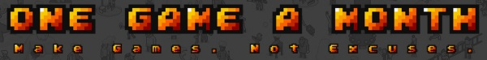

One Game A Month
Jan 11, 2013 · CommentsGames development
Your quest is to try to create one new game each month. This challenge is meant to help you on a personal level. There are no prizes, signup fees or rules. It might sound crazy optimistic, but you CAN do it.

These are the opening lines on the One Game A Month website, an initiative by Christer Kaitila aka @McFunckypants (author of The Game Jam Survival Guide). I came across this insane quest just over a week ago and I've given it a lot of thought before accepting it. No doubt, it's a ton of work but it could have an immensely big educational power if used right. By definition, it gives you 12 attempts to try completely new things!
I sincerely believe it to be an accomplishable task, providing that each game is not over scoped. Taking into account weekends away, important events and workload at the office won't be easy, but that doesn't mean I shouldn't try! Hell, may this post serve as a shameful proof of my failure shall that come to happen. The fact that game jams, ports and prototypes count, will certainly make the process less painful.
Conveniently, this comes at a time when I wanted to try learn new things such as AI techniques or some graphics programming (which I, shamefully, know nothing about). One Game A Month could be seen as the perfect way of keeping myself engaged and highly motivated.
Motivation! This ties with the super awesome online platform on which One Game A Month is built. @McFunckyPants has shipped some sort of gamification system where the user creates a profile an earns experience points by submitting games and helping other people out. Furthermore, there's a gamedev partner search system where participants can look for registered coders/artists to team up with. I was amazed at the massive amount of work put into this for pure gamedev love. Thanks a lot for that! The Twitter community is also strong and the retweet bot makes it easy to meet new people and their projects.
Like I said, I love it! It's pure community spirit.
There will be news on the January project soonish. In the meantime, I"ll just leave you with the keynote video.